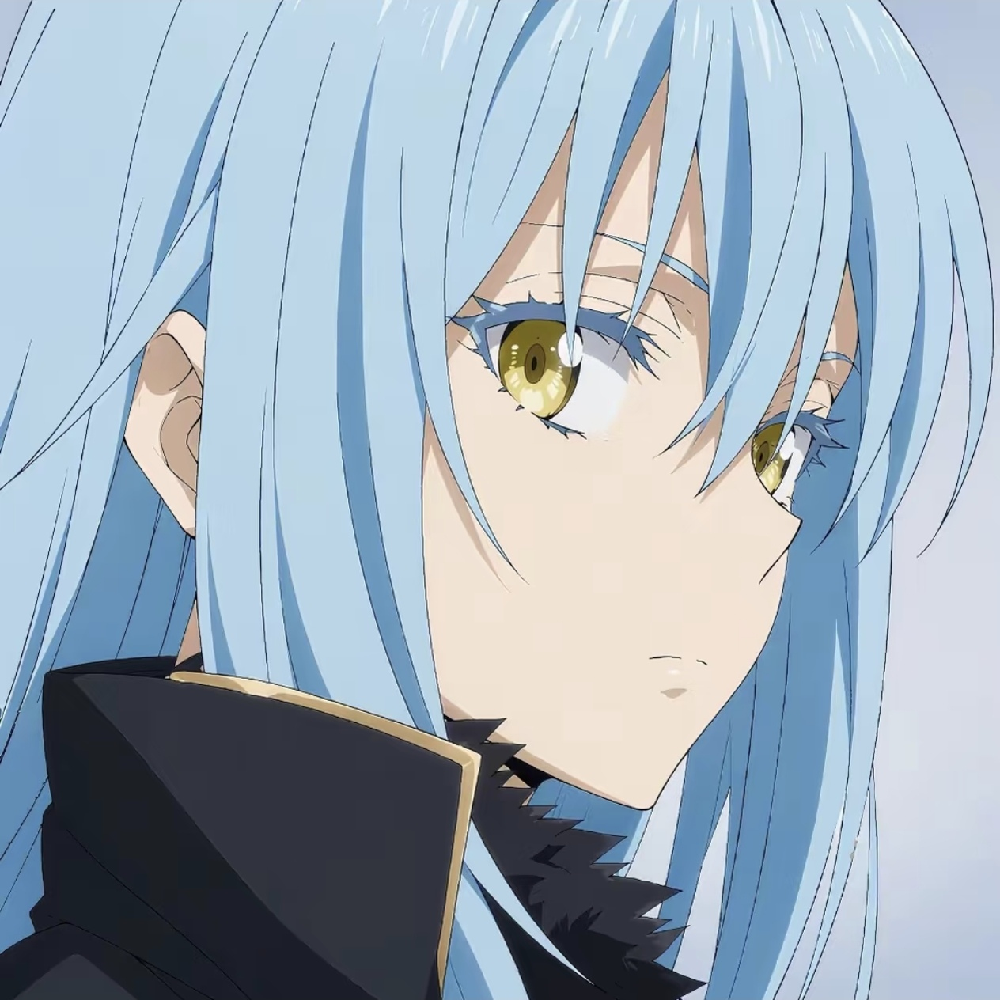

点击头像 · 换一句
喜欢我的头像吗，他叫利姆鲁，本体是一只可爱的史莱姆哦。
大二在读 · 热爱生活 · 保持好奇
上海交通大学 · 智能感知工程
大二在读
中国 · 上海
来自 安徽
巨蟹座 · INTJ
感性与理性并存
我是一名大二学生，正处于对世界充满探索欲的年纪。 喜欢把想法付诸行动，相信每一次尝试都有其意义。 这里是我记录自己的一角。
"我始终对成长充满忐忑，但只要不断出发，就会不断有新的收获。"
对成长的忐忑，大概从来没有真正消失过。 每一次站在新的起点——第一次离家、第一次独立做决定、第一次面对真正意义上的失败—— 都会有一种说不清楚的慌张，像是站在雾里，看不到脚下的路延伸向哪里。
但我后来发现了一件事：那种忐忑并不会因为"想清楚了"就消散， 它只会在你真的迈出去之后，悄悄变轻。 每一次出发，哪怕方向还模糊，都会带回一些出发之前没有的东西—— 可能是一种新的眼光，可能是对自己的一点新认识， 也可能只是一段意外的经历，但那已经足够了。
我不再执着于找到"正确答案"再行动。 现在的我更相信： 路是走出来的，收获是出发换来的。
顺利度过期末考试，为这个学期画好句号
去更多喜欢的歌手的演唱会
多尝试上海的美食，寻找机会探索韩国街